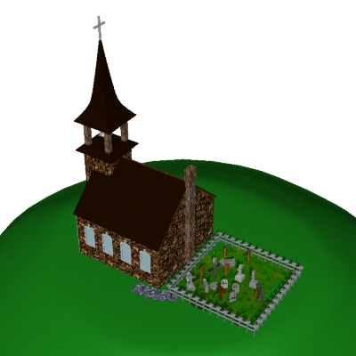
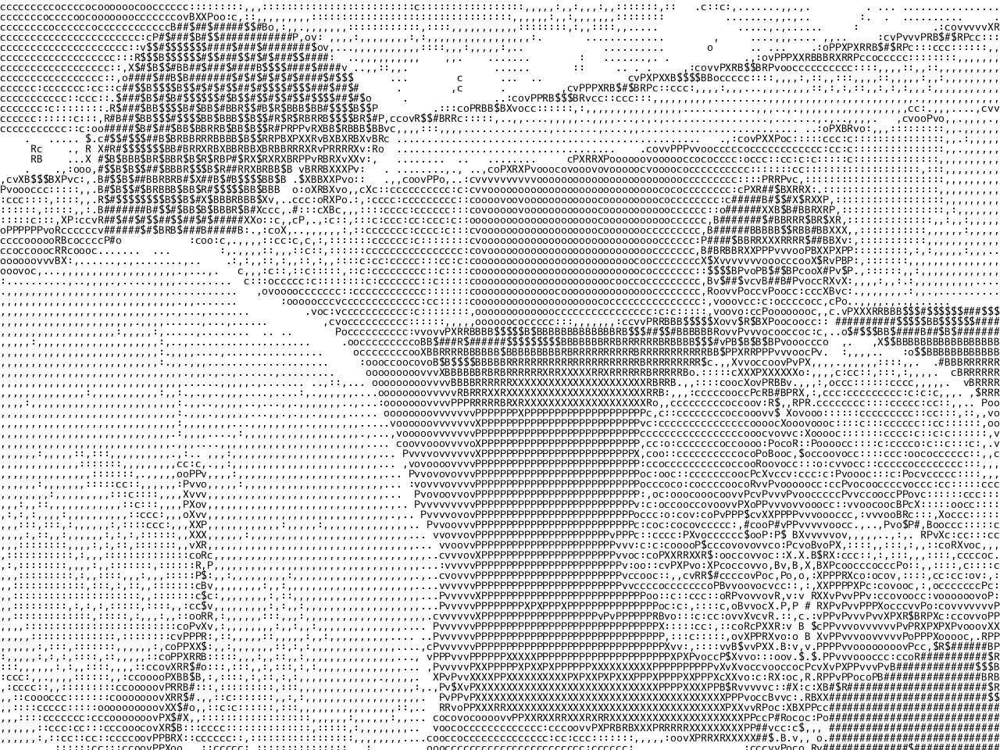
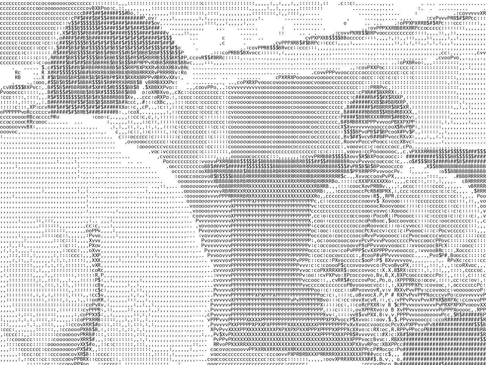

cursor copperplate etching 2023


cursor copperplate etching 2023
Cursor was the second plate I ever worked on, but it was the last one that I finished.
The project started, without my knowledge, when I cut upwards of a hundred tiny paper arrows meant to resemble the ubiquitous mouse cursor icon that we see nearly every time we use a computer. I wanted to have these because I felt that they were significant, and because seeing lots of them at once usually means that your computer is glitching out.
I rolled the paper cursors through a printing press to imprint their silhouette on my plate through a soft ground. I had to go back and trace their outlines later to make them visible in print.
Lastly, I added the lettering through a mix of drypoint and deep etching, resulting in an open bite, which made for a really interesting blend of values and shapes within the letters.
facefall (self-portrait) acrylic gouache on bristol 2022
facefall (self-portrait) acrylic gouache on bristol 2022
Facefall was my final project for a color theory class.
In class, we had a little photoshoot for our self-portraits, and none of the photos taken of me were any good. I decided to use the worst photo of the bunch and ended up going back to an old code project to mess with it.
The program takes all pixels above a certain brightness and shifts them upwards, letting the pixels above fall down below. It tends to behead (white) people because their skin is usually brighter than their clothes.
At the time that I made this, I hated having my picture taken, let alone having to spend hours slaving over a monument to my own face. I had gone through every option available to me in a self-portrait setting to avoid drawing my own face. This was no different. However, I still like to look back on works like this.

laptop repurposed laptop with manipulated polarized film 2022

laptop repurposed laptop with manipulated polarized film 2022
Laptop was my first foray into polarized film mosaics. Another, much larger one I made can be found here.
After I first started messing with LCDs and polarized film, my dad made an effort to pick up any old computers that people wanted to throw out (shout out!). This laptop was one of those that he rescued. I began by dissecting (maybe it would have preferred the landfill) the old thing, isolating its screen and removing the front piece of polarized film. This rendered the screen useless, just displaying a wall of white. I then reassembled the laptop, but I made sure to disconnect the video cable. This stopped any of the graphics it might have wanted to display from interfering with my work.
I then got to image-making. I cut the original front piece of film into squares, making sure they were at specific angles to make different values for the pixels. I used super 77 and some tweezers to apply the tiles, gradually remaking the screen to display one image forever.
I love the beeps and whirrs the computer makes as it rattles to life each time you press the power button. It stays tethered to its charging cable since the battery stopped holding charge a decade ago. Nothing new, apart from the glue, was introduced to this computer. Its components were simply rearranged.

church three-color screen print 2024

church three-color screen print 2024
The source image for Church was found on a old CD filled with assets meant for website creation. Made after Bear, I was still experimenting with diffusion-dithered screen printing. However, I wanted to use red, green, and blue rather than the typical CMYK. The blue layer of the original image was inverted to give more definition to the printed image.
As I was printing my editions, I started experimenting with the colors I was printing in, eventually landing on the white and black of the second piece in the diptych. The would-be red layer wasn't printed at all, just the layers meant to be green and blue.
It doesn't translate on-screen, but the two pieces are each 3.5 x 3.5 inches. This is one of the finest, most detailed prints I've managed to execute sucessfully.

bear four-color screen print 2024


bear four-color screen print 2024
Bear was my first foray into diffusion-dithered screen printing. The entire time I've been screen printing, I've used halftones, mostly because they're the standard process and because they can effectively convey an image while being relatively low-detail. I've stayed away from high-detail printing due to the very low-fidelity origins of my screen printing process.
However, I wanted to try something new and it ended up working! It also emboldened me to try high-detail printing more regularly. This was printed with cyan, magenta, yellow, and black for full-color. The cyan layer did get blown out, making the final image a lot more blue than the source.
The source image was found on a CD asset library called "5000 COLOR PHOTOS". I found it at goodwill.
The poem at the bottom was found on the internet. I eventually looked it up and found that it was written by a dude named R. Buckminster Fuller, and has been edited into all kinds of inspirational images with sunset backgrounds to be shared on facebook. I like the vibes.

liquid crystal projector, broken screens, polarized film (installation) 2021


liquid crystal projector, broken screens, polarized film (installation) 2021
Liquid crystal is an installation piece done for my senior IB art show at a local gallery.
This work stemmed from my interest in the patterns and ripples that would appear when you squished the screen of your calculator or laptop screen. I did a lot of research into the technology behind these screens, after I had already taken apart several of them with no knowledge of how they worked.
The magic ingredient of these screens is called liquid crystal, and it works to bend the light between two sheets of polarized film. In this way, it blocks light from coming through specific areas of the screen, allowing images and numbers to be displayed.
Each piece of the work was sourced from sellers online. The projector was from a father on Craigslist, who's daughter used to use it to project sketches for her murals. The screens were from a lot of ten calculators labelled as "for parts" on eBay, even though all of them still worked, they were just missing their batteries.
I chose this type of projector because it meant that I could have the physical screen in the gallery alongside a dynamic larger representation of itself.
You may notice that the projected image is different in nearly all the photos I have, and that is because the projector emits enough heat to change the viscosity of the liquid crystal, affecting the image. In the gallery, the projector is off until someone comes up and presses the button to turn it on. Depending on how recently it was used and for how long, the spectator will see a different image.

ascii copperplate etching 2023


 

ascii copperplate etching 2023
ASCII was a marathon. I had recently completed a coding project that allowed me to convert images into strings of text that approximated the brightness levels of an image, and I had the inane thought to redraw it all by hand.
After going through a few options for the image choice, I landed on a man facing his computer, which felt just barely within the realm of possibility of a legible image. All of the work was to be done in a hard ground on copper plate. The ground coats the copper and protects it from the acid in the etching process. However, I can use a sharp tool to scrap away the ground in the places where I want lines to form.
I used sharpie to lay out a guiding grid for myself and got to work. All of the letters had to be written backwards on the plate, as the image gets reversed when printing. The work was a week's labor, but I quickly fell into a good rhythm and the time flew by. When I went to etch the plate, the sharpie ended up affecting the final image, causing the vertical streaks near the edges of the print. However, the image printed as intended, just barely legible.

listed inkjet print with arduino and display on linen 2021
listed inkjet print with arduino and display on linen 2021
Listed displays the hexadecimal code of the printed image in the bottom left corner, from beginning to end, on loop. Not all of the characters are numbers because hexadecimal code is base 16: 0, 1, 2, 3, 4, 5, 6, 7, 8, 9, A, B, C, D, E, F. Color codes are in hexadecimal; for example, cobalt blue is #0047AB. The image is so few pixels large because the arduino's memory cell wasn't large enough to contain anything bigger. The wires are all plugged into a breadboard computer, piercing the linen; simultaneously obscuring the workings of the device and affixing it to the frame.
The loop of numbers and letters starts with a lot of repeated characters and zeroes. This is known as the header of the image, and it contains a lot of important information about the image, like the file type, resolution, date created, colorspace, and a whole bunch of other metadata. After those repeated characters is the actual pixel data of the image, which makes up the majority of the loop.

faces copperpate etching 2023


faces copperpate etching 2023
Faces is another code exploration translated into copperplate etching. I had been sitting on this program that I wrote, which takes a set of images and cycles through them. As it does this, a facial recognition program finds the faces of people within the image and cuts them out, letting the rest of the image get wiped before the next one pops up. What results is this collage of people, along with random errors made by the facial recognition software. There was one tie in one of the images that continually proved to be problematic.
The images themselves were found on a CD from the thrift store, an old website construction toolkit that came with an asset library. The pictures used in this piece were from a folder called "business".
Translating the work into a copperplate etching was tricky. I started by isolating the background, masking the areas for the faces with sharpie. The sharpie didn't fully block the acid, resulting in the gray smudges visible in one of the process prints. To make the black background, I dusted the surface of the plate with spraypaint to make an aquatint. The acid eats in between all the flecks of paint, resulting in a sandpaper-like finish that traps a lot of ink in solid blocks.
With that prep work done, I coated the entire plate in a hard ground and freehanded the faces into their corresponding boxes. It felt so good to finally work outside of a grid and to let my less- than-excellent drawing skills shine. Etching that linework was simple, but I realized that my dark background could be darker. I did another spraypaint aquatint, letting the acid eat at it for longer before taking the plate out and test printing it. I was relieved to see a beautiful inky black, and set off to print on nice paper, which I ended up creasing anyway.